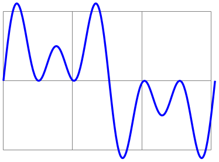
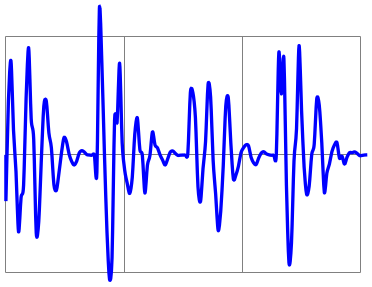

The TikZ and PGF Packages
Manual for version 3.1.9a
Mathematical and Object-Oriented Engines
95 Customizing the Mathematical Engine
Perhaps you have a desire for some function that pgf does not provide. Perhaps you are not happy with the accuracy or efficiency of some of the algorithms that are implemented in pgf. In these cases you will want to add a function to the parser or replace the current implementations of the algorithms with your own code.
The mathematical engine was designed with such customization in mind. It is possible to add new functions, or modify the code for existing functions. Note, however, that whilst adding new operators is possible, it can be a rather tricky business and is only recommended for adventurous users.
To add a new function to the math engine the following command can be used:
\pgfmathdeclarefunction*{⟨function name⟩}{⟨number of arguments⟩}{⟨code⟩} ¶
This will set up the parser to recognize a function called ⟨name⟩. The name of the function can consist of, uppercase or lowercase letters, numbers or the underscore _. In line with many programming languages, a function name cannot begin with a number or contain any spaces. The function may not have been declared earlier, unless the optional star (*) is provided, which forces an “overwriting” of the function by the new function. Note that you should never change the arity of standard functions and you should normally use \pgfmathredeclarefunction, which does not allow you to do anything wrong here.
The ⟨number of arguments⟩ can be any positive integer, zero, or the value ..., which indicates a variable number of arguments. pgf treats constants, such as pi and e, as functions with zero arguments. Functions with more than nine arguments or with a variable number of arguments are a “bit special” and are discussed below.
The effect of ⟨code⟩ should be to set the macro \pgfmathresult to the correct value (namely to the result of the computation without units). Furthermore, the function should have no other side effects, that is, it should not change any global values. As an example, consider the creation of a new function double, which takes one argument, and returns the value of that argument times two.
88.6
\makeatletter
\pgfmathdeclarefunction{double}{1}{
\begingroup
\pgf@x=#1pt\relax
\multiply\pgf@x
by2\relax
\pgfmathreturn\pgf@x
\endgroup
}
\makeatother
\pgfmathparse{double(44.3)}\pgfmathresult
The macro \pgfmathreturn⟨tokens⟩ must be directly followed by an \endgroup and will save the result of the computation, by defining \pgfmathresult as the expansion of ⟨tokens⟩ (without units) outside the group, so ⟨tokens⟩ must be something that can be assigned to a dimension register.
Alternatively, the \pgfmathsmuggle⟨macro⟩ can be used. This must also be directly followed by an \endgroup and will simply “smuggle” the definition of ⟨macro⟩ outside the TeX-group.
By performing computations within a TeX-group, pgf registers such as \pgf@x, \pgf@y and \c@pgf@counta, \c@pgfcountb, and so forth, can be used at will.
Beyond setting up the parser, this command also defines two macros which provide access to the function independently of the parser:
• \pgfmath⟨function name⟩
This macro will provide a “public” interface for the function ⟨function name⟩ allowing the function to be called independently of the parser. All arguments passed to this macro are evaluated using \pgfmathparse and then passed on to the following macro:
• \pgfmath⟨function name⟩@
This macro is the “private” implementation of the function’s algorithm (but note that, for speed, the parser calls this macro rather than the “public” one). Arguments passed to this macro are expected to be numbers without units. It is defined using ⟨code⟩, but need not be self-contained.
For functions that are declared with less than ten arguments, the public macro is defined in the same way as normal TeX macros using, for example, \def\pgfmathNoArgs{⟨code⟩} for a function with no arguments, or \def\pgfmathThreeArgs#1#2#3{⟨code⟩} for a function with three arguments. The private macro is defined in the same way, and each argument can therefore be accessed in ⟨code⟩ using #1, #2 and so on.
For functions with more than nine arguments, or functions with a variable number of arguments, these macros are only defined as taking one argument. The public macro expects its arguments to be comma separated, for example, \pgfmathVariableArgs{1.1,3.5,-1.5,2.6}. Each argument is parsed and passed on to the private macro as follows: \pgfmathVariableArgs@{{1.1}{3.5}{-1.5}{2.6}}. This means that some “extra work” will be required to access each argument (although it is a fairly simple task).
Note that there are two exceptions to this arrangement: the public versions of the min and max functions still take two arguments for compatibility with older versions, but each of these arguments can take several comma separated values.
To redefine a function use the following command:
\pgfmathredeclarefunction{⟨function name⟩}{⟨code⟩} ¶
This command redefines the \pgfmath⟨function name⟩@ macro with the new ⟨code⟩. See the description of the \pgfmathdeclarefunction for details. You cannot change the number of arguments for an existing function.
84.0 126.0
\makeatletter
\pgfmathdeclarefunction{foo}{1}{
\begingroup
\pgf@x=#1pt\relax
\multiply\pgf@x
by2\relax
\pgfmathreturn\pgf@x
\endgroup
}
\pgfmathparse{foo(42)}\pgfmathresult
\pgfmathredeclarefunction{foo}{
\begingroup
\pgf@x=#1pt\relax
\multiply\pgf@x
by3\relax
\pgfmathreturn\pgf@x
\endgroup
}
\pgfmathparse{foo(42)}\pgfmathresult
\makeatother
pgf uses the last known definition of a function within the prevailing scope, so it is possible for a function to be redefined locally. You should also remember that any .sty or .tex file containing any re-implementations should be loaded after pgfmath.
In addition to the above commands, the following key is provided to quickly create simple ad hoc functions which can greatly improve the readability of code, and is particularly useful in TikZ:
/pgf/declare function=⟨function definitions⟩(no default) ¶
This key allows simple functions to be created locally. Its use is perhaps best illustrated by an example:

\begin{tikzpicture}
\draw [help lines] (0,0) grid
(3,2);
\draw [blue, thick, x=0.0085cm, y=1cm,
declare function={
sines(\t,\a,\b)=1 + 0.5*(sin(\t)+sin(\t*\a)+sin(\t*\b));
}]
plot
[domain=0:360, samples=144, smooth] (\x,{sines(\x,3,5)});
\end{tikzpicture}
Each definition in ⟨function definitions⟩ takes the form ⟨name⟩(⟨arguments⟩)=⟨definition⟩; (note the semicolon at the end, this is very important). If multiple functions are being defined, the semicolon is used to separate them (not a comma). The function ⟨name⟩ can be any name that is not already a function name in the current scope. The list of ⟨arguments⟩ are commands such as \x, or \y (it is not possible to declare functions that take variable numbers of arguments using this key). If the function takes no arguments, then the parentheses need not be used. The ⟨definition⟩ should be an expression that can be parsed by the mathematical engine and should use the commands specified in ⟨arguments⟩.
When specifying multiple functions, functions that appear later on in ⟨function definitions⟩ can refer to earlier functions:

\begin{tikzpicture}[
declare function={
excitation(\t,\w) = sin(\t*\w);
noise
=
rnd - 0.5;
source(\t) =
excitation(\t,20) + noise;
filter(\t) = 1
- abs(sin(mod(\t, 90)));
speech(\t) = 1
+ source(\t)*filter(\t);
}
]
\draw [help lines] (0,0) grid
(3,2);
\draw [blue, thick, x=0.0085cm, y=1cm] (0,1) --
plot
[domain=0:360, samples=144, smooth] (\x,{speech(\x)});
\end{tikzpicture}
/pgf/declare function/execute at begin function=⟨tokens⟩(no default) ¶
These ⟨tokens⟩ are inserted just before \pgfmathdeclarefunction scans the body of the function definition. This is a rather low-level option, so you should read the implementation to figure out where the ⟨tokens⟩ are inserted.
/pgf/declare function/execute at end function=⟨tokens⟩(no default) ¶
These ⟨tokens⟩ are inserted just after \pgfmathdeclarefunction has finished scanning the body of the function definition. This is a rather low-level option, so you should read the implementation to figure out where the ⟨tokens⟩ are inserted.
/pgf/declare function/ignore spaces=⟨boolean⟩(no default) ¶
Uses the two previously described keys /pgf/declare function/execute at begin function and /pgf/declare function/execute at end function to install catcodes such that spaces inside the body of the function definition of \pgfmathdeclarefunction are ignored. The usual TeX tokenization rules apply, so if the body of the function had already been tokenized by other means this will become ineffective. If you want to use a space you can use ~ in the function body which has its catcode set to 10 (space).